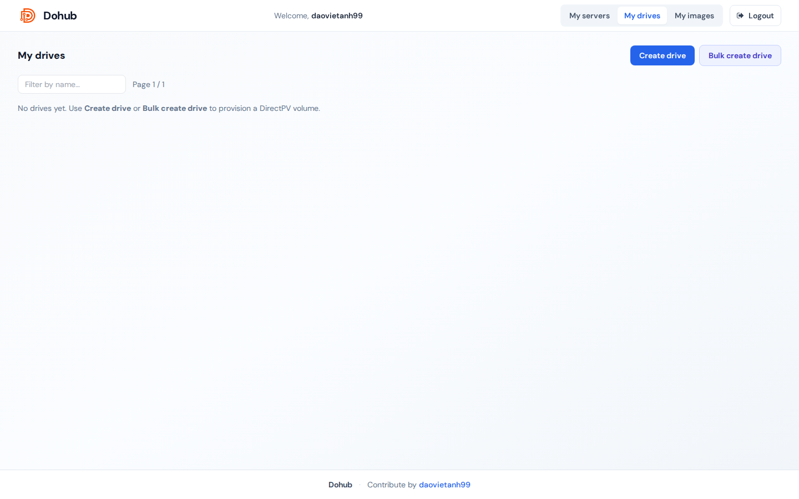
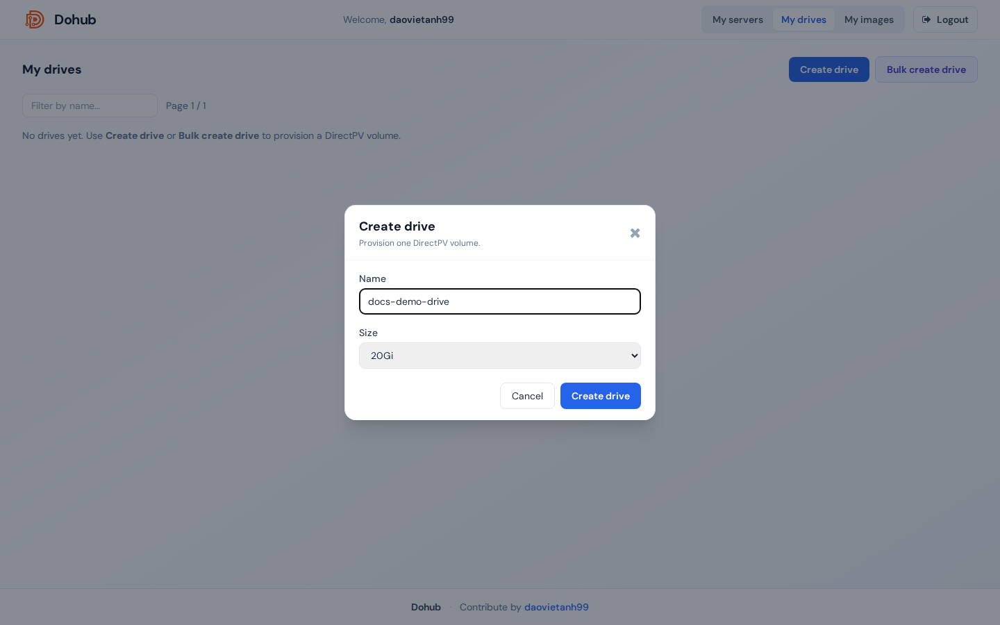
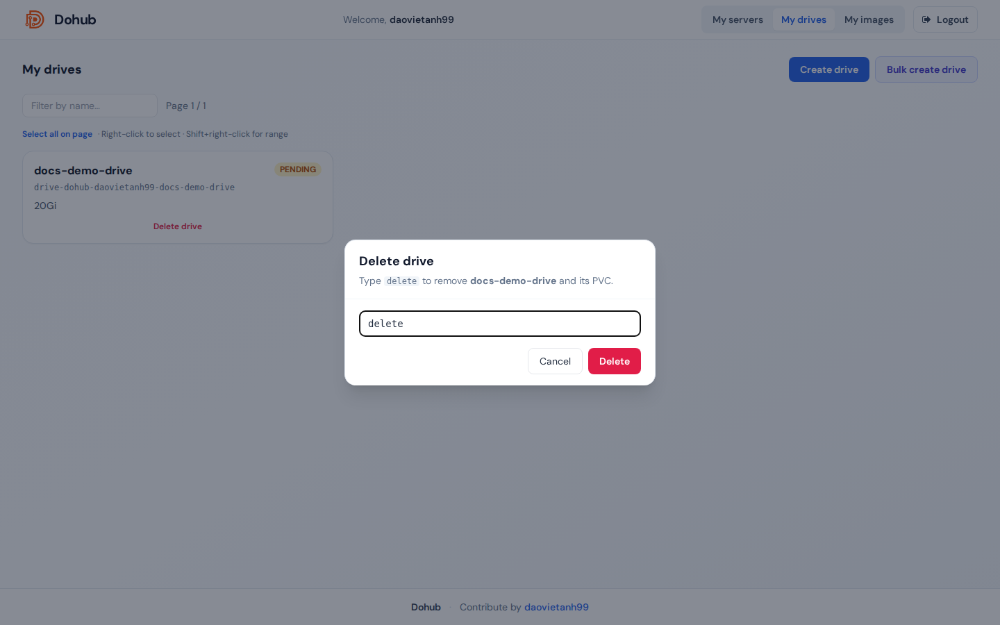

Drive là volume lưu trữ bền vững trên cluster (StorageClass directpv-min-io). Mỗi drive thuộc về một user và có thể mount vào một hoặc nhiều server khi tạo workspace.

Drives: n / max nếu có giới hạn).docs-demo-drive cho mục đích thử nghiệm).20Gi, 100Gi).
docs-demo- và xóa ngay sau khi xong. Không xóa drive đang được server đang chạy sử dụng.Nút Bulk create drive mở modal hỗ trợ JSON hoặc CSV:
[{"name":"docs-demo-a","size":"20Gi"},{"name":"docs-demo-b","size":"20Gi"}]CSV header: name,size
delete để xác nhận.
| Badge | Ý nghĩa |
|---|---|
bound | Đang gắn với PVC / server |
| Loading… | Đang đồng bộ trạng thái K8s |